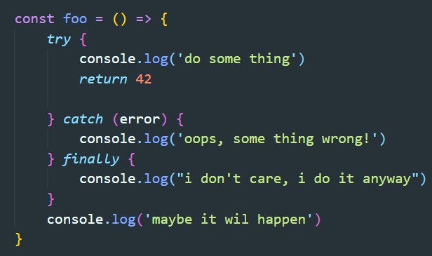
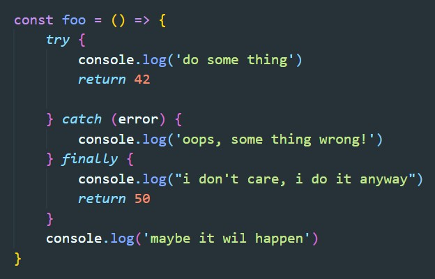

Существует три секции для кода:
Малоизвестно, но try требует только одну из секций (либо catch, либо finally). Блок finally можно рассматривать, как функцию обратного вызова. Finally выполнится всегда сразу же после выполнения try.
Что будет если в нашем примере мы в блок try поместим return?
В этом случае выполнится два лога, тот что в try и тот что в finally. Дальше выполнение функции прервется из за return и наша функция вернет значение 42. Но что будет если в секцию finally так же вставить return
В этом случае наша функция вернет значение 50, так как return секции finally переопределит return секции try